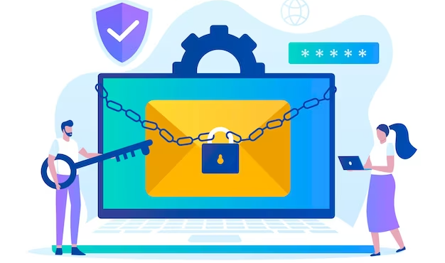
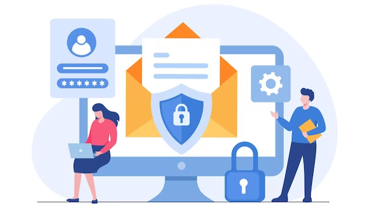

Maintaining the integrity of emails is crucial in the realm of email communication. To achieve this, DMARC (Domain-based Message Authentication, Reporting and Conformance) integrates SPF and DKIM, two established email authentication methods. Organizations can safeguard their brand reputation, thwart email fraud and phishing attempts, and enhance email deliverability by adopting DMARC. Google has also prioritized user email security by implementing DMARC policies across its services, including Gmail.
It is crucial for individuals and businesses who rely on Gmail for their email communication to grasp the significance of DMARC and its impact on their emails. This article will provide an in-depth analysis of Gmail DMARC, highlighting the advantages of adopting DMARC policies within your organization. Additionally, it will address the potential limitations and obstacles associated with DMARC implementation, along with strategies to overcome them.
Understanding DMARC: A Brief Overview

So, before we jump into all the cool stuff about DMARC, let's get a grasp on what it actually is. DMARC is like this super powerful email authentication thingy that lets domain owners protect their precious email domains from those sneaky unauthorized users and cyber threats lurking in emails. It gives these domain owners a way to tell email receivers how they should deal with those sketchy unauthenticated emails so they don't end up bothering the recipients.
Some Benefits of implementing DMARC for Gmail
- Enhanced Email Security: DMARC is a valuable tool in safeguarding your domain and email recipients against the perils of phishing attacks, spoofing, and email fraud. By adopting DMARC, you can guarantee that only genuine emails from authorized sources will be successfully delivered to recipients' inboxes.
- Reduced Phishing Threats: Phishing emails frequently employ deceptive tactics to deceive recipients into revealing sensitive information or engaging with harmful links. The implementation of DMARC plays a crucial role in mitigating the impact of phishing attacks by blocking these fraudulent emails from reaching recipients' inboxes.
- Better Sender Reputation: By incorporating DMARC, you can positively impact the sender reputation associated with your domain. Email servers tend to place more trust in domains that have implemented a DMARC policy, thereby increasing the likelihood of successful email delivery.
- Improved Email Deliverability: DMARC plays a crucial role in guaranteeing the successful delivery of your legitimate emails to recipients' inboxes, minimizing the risk of them being flagged as spam or relegated to the junk folder. This ultimately fosters improved communication with your audience and boosts engagement rates.
- Visibility and Reporting: DMARC offers comprehensive insights into email authentication failures and successful deliveries, enabling you to effectively monitor and analyze email traffic. This valuable visibility empowers you to detect unauthorized senders and take necessary measures to protect your domain.

Enhancing Email Deliverability and Security
Enhancing email deliverability and security is crucial for maintaining effective communication while protecting sensitive information. Follow these best practices to achieve both objectives:
- Use a Trusted Email Service Provider (ESP): Select a trustworthy ESP that implements strong security measures and has a proven history of successfully delivering emails to the inbox instead of the spam folder.
- Implement SPF, DKIM, and DMARC: Implement Sender Policy Framework (SPF), DomainKeys Identified Mail (DKIM), and Domain-based Message Authentication, Reporting, and Conformance (DMARC) records to validate your email communications, safeguard against impersonation, and enhance email delivery.
- Regularly Update and Clean Your Email List: It is essential for maintaining a favorable sender reputation to remove any inactive or invalid email addresses. The act of sending emails to addresses that do not exist can set off spam filters and have a detrimental impact on the ability to successfully deliver messages.
- Optimize Email Content: It is vital to produce content that is pertinent, captivating, and does not come across as spam in order to evade activation of spam filters. Furthermore, refrain from utilizing an excessive amount of capital letters, an abundance of visuals, or any questionable keywords.
- Personalize Emails: By incorporating recipient names and tailoring content based on their preferences and behaviors, the likelihood of personalized emails being identified as spam decreases.
Visit DMARC Report Here
DMARC Report
5965 Village Way Suite 105-234
San Diego, CA 92130
Phone: +1-855-700-1386
In summary, the adoption of DMARC authentication has become indispensable for businesses and organizations utilizing Gmail for email correspondence. It serves as a crucial defense against email spoofing, phishing attacks, domain abuse, and various other security risks. By enforcing DMARC policies, businesses can safeguard their brand reputation and guarantee the successful delivery of legitimate emails to their intended recipients. Consequently, it is strongly advised that organizations undertake the requisite measures to implement DMARC authentication in order to fortify their email communication and safeguard their clientele.